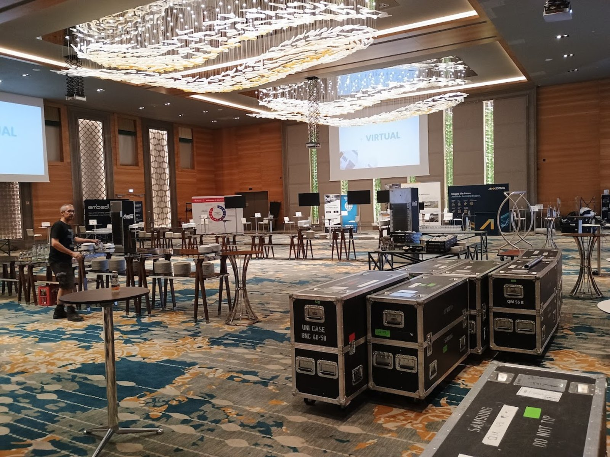
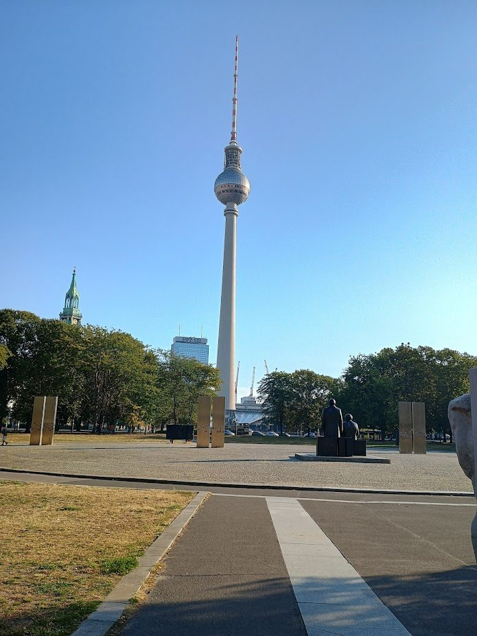

Auto.AI Europe 2024: a tight-knit community and practical takeaways
Auto.AI Europe in September 2024 was a compact event at the intersection of automotive and AI. The value was not scale, but conversation quality: the right people, the right topics, and a short distance to actual decisions.
Context
I attended the event together with the N-iX team. This is the kind of conference where the real value comes from being part of the community rather than simply showing up as a visitor.
People and atmosphere
In one of the photos, I am standing next to Christian Svensson, Director of N-iX Nordic. One of the strongest parts of such events is the sense of belonging to a professional circle rather than just consuming content from the sidelines.



My role
I moderated a session on energy optimization in vehicles. There were several strong speakers and a number of practical case studies. I am not naming companies or individuals here because context and ethics matter, and some discussions naturally sit close to NDA territory.
What stayed with us
After returning from the event, we received a cooperation proposal. That is a useful signal that the trip was not about visibility alone, but about creating the right contact with the right framing.
A note for the future
Sometimes it is worth not clinging too tightly to overly conservative “event rules.” If done respectfully and with awareness of context, a small amount of courage often opens doors faster than a perfectly correct but sterile scenario.